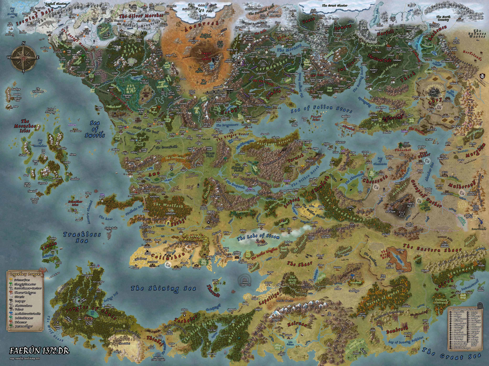
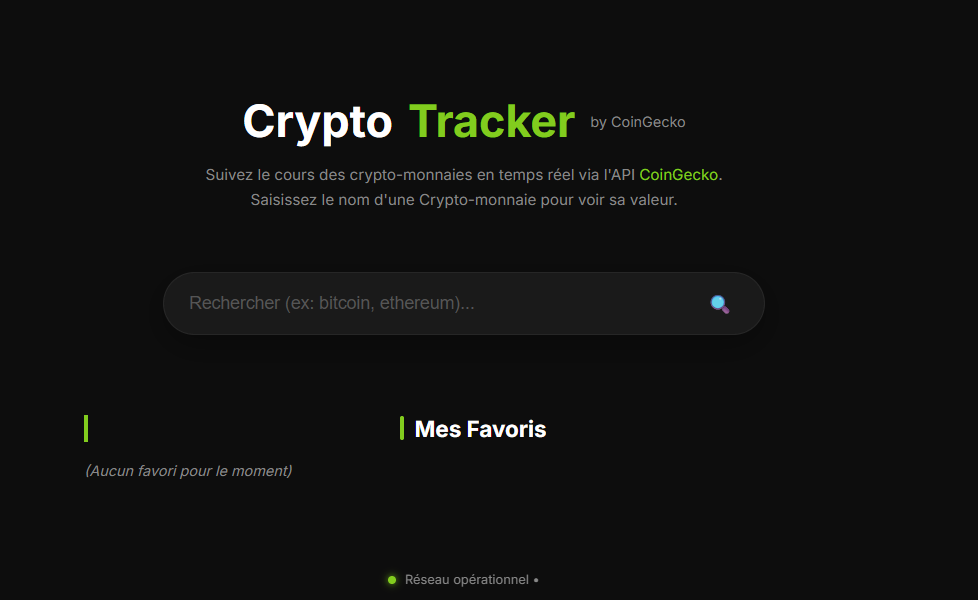
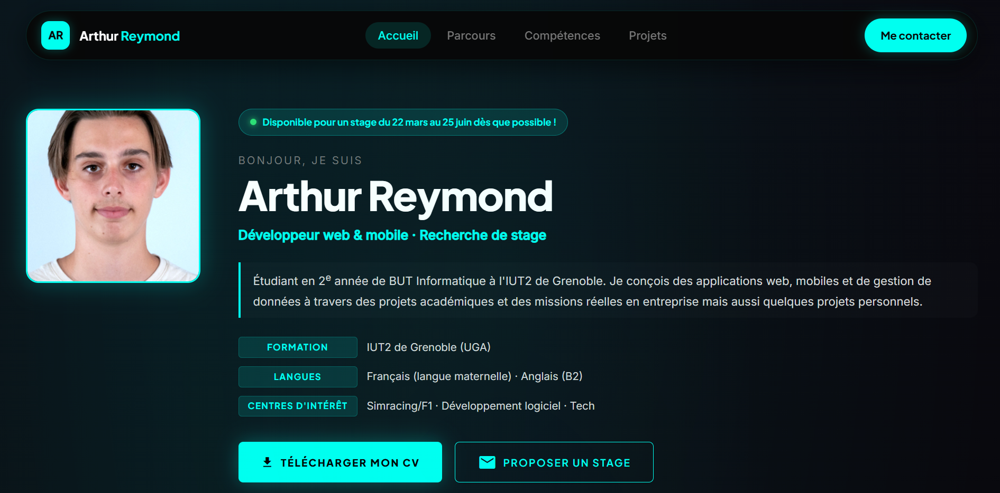
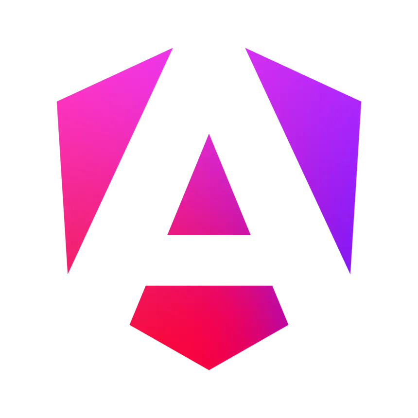
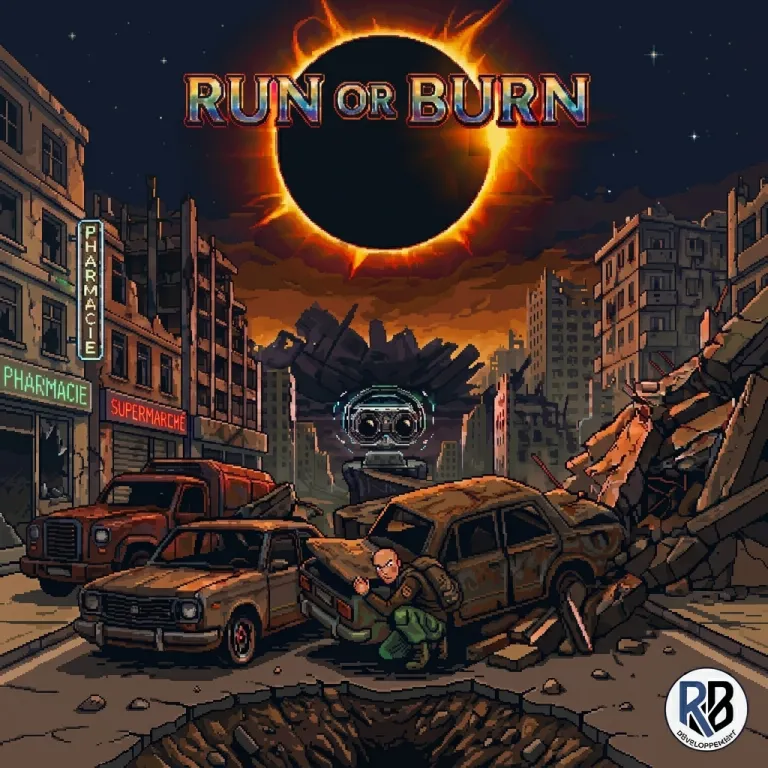
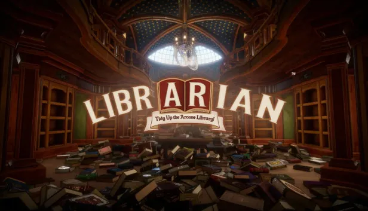
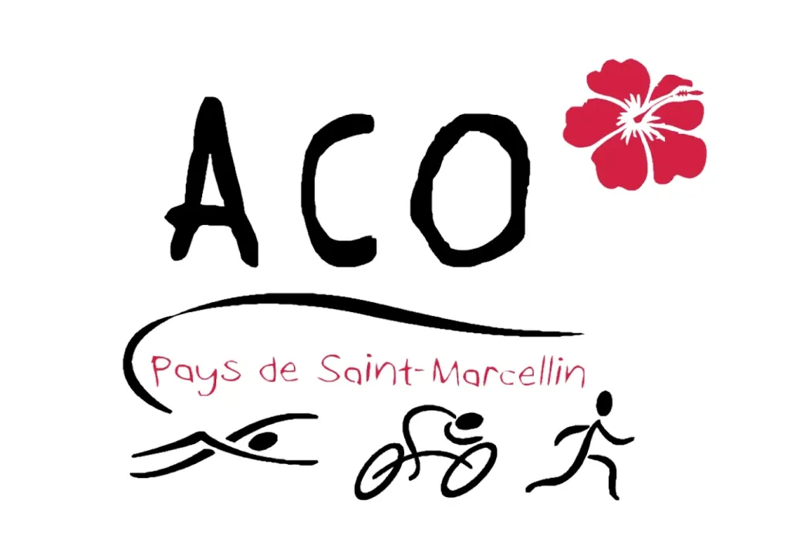
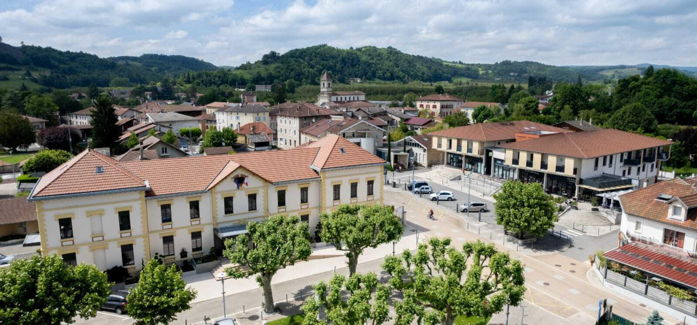
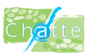

2024 – Présent
BUT Informatique – Parcours Réalisation d'applications
IUT2 de Grenoble · Architecture logicielle, bases de données, POO Java, Symfony et développement web.
Bonjour, je suis
Développeur web & mobile · Recherche de stage
Étudiant en 2e année de BUT Informatique à l'IUT2 de Grenoble. Je conçois des applications web, mobiles et de gestion de données à travers des projets académiques et des missions réelles en entreprise mais aussi quelques projets personnels.
Parcours Réalisation d'applications (IUT2 Grenoble)
Refonte web institutionnelle & module d'inscription
Du 22 mars au 25 juin
Cliquez sur une technologie pour voir les projets associés.
Cliquez sur une technologie pour voir les projets associés.
Cliquez sur une technologie pour voir les projets associés.
IUT2 de Grenoble · Architecture logicielle, bases de données, POO Java, Symfony et développement web.
Audit ergonomique, restructuration de l'architecture d'information et mise à jour des contenus sur CMS « maison ».
Voir le site north_eastRefonte visuelle sous WordPress et automatisation du système d'inscription en ligne pour optimiser le parcours adhérent.
Travail en horaires d'équipe, gestion de l'efficacité opérationnelle et respect des cadences de production.
Gestion logistique des stocks, préparation des commandes et travail en flux tendu sous contraintes horaires.
Accueil des usagers, gestion des installations et polyvalence opérationnelle sur le terrain.
Lycée La Saulaie · Spécialités Mathématiques, Physique-Chimie & Maths Expertes.
Traitement algorithmique et analyse de performance sur volumes textuels.
En savoir plus →Projet d'intégration responsive axé sur le parcours candidat et l'ergonomie.
En savoir plus →Nettoyage de jeux de données réels et modélisation statistique.
En savoir plus →
Jeu de stratégie au tour par tour conçu avec une architecture orientée objet.
En savoir plus →Application lourde MVC avec IHM interactive et couverture de tests unitaires.
En savoir plus →Agenda partagé, chatbot PHP et messagerie déployés sur serveur VPS.
En savoir plus →
App JavaScript MVC consommant l'API REST CoinGecko avec persistance des données.
En savoir plus →Plateforme e-commerce full-stack (ORM Doctrine, sécurité, panier, Docker).
En savoir plus →Refactoring global et normalisation d'une base de données locale sous Room DB.
En savoir plus →Web app JavaScript Vanilla avec backend Supabase (PostgreSQL Cloud).
En savoir plus →
Site dynamique conçu avec modales accessibles et filtres interactifs.
En savoir plus →
Application Angular en cours de développement : composants, routing et services.
En savoir plus →
Jeu développé en équipe en temps limité lors de la Game Jam 2026 de l'IUT2.
En savoir plus →
Site de statistiques d'un défi « No Magic » sur le jeu Librarian : 3 072 livres rangés, graphiques et sprints.
En savoir plus →
Refonte du site et automatisation des workflows d'inscription en ligne.
En savoir plus →

Site public officiel personProjet personnelRestructuration de l'arborescence et mise en conformité des contenus web.
En savoir plus →Disponible pour un stage dès que possible. N'hésitez pas à me joindre directement par email ou téléphone.
arthur.reymond@etu.univ-grenoble-alpes.fr
Chatte / Grenoble, Isère (38) · Permis B
IUT2 de Grenoble – BUT Informatique